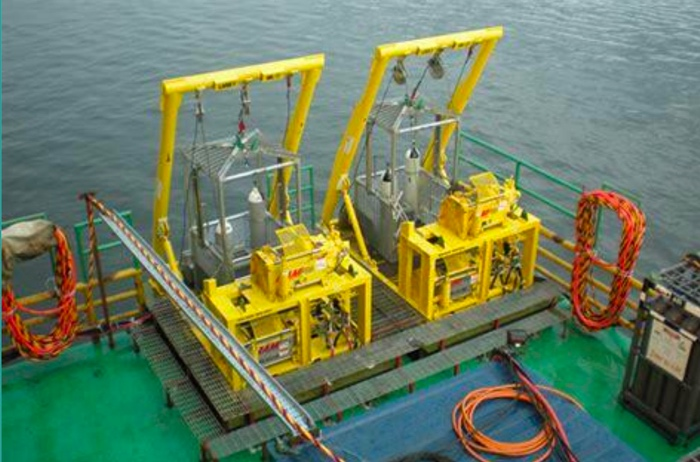
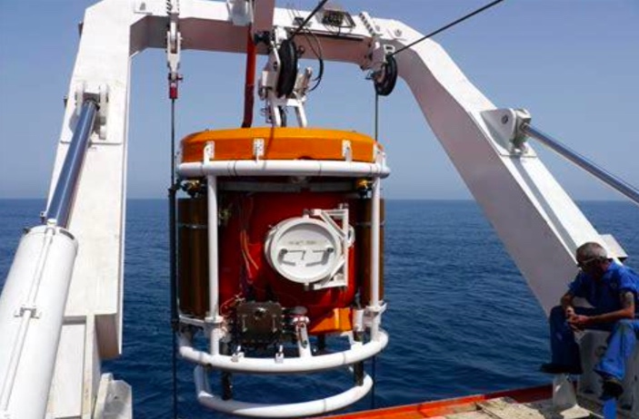
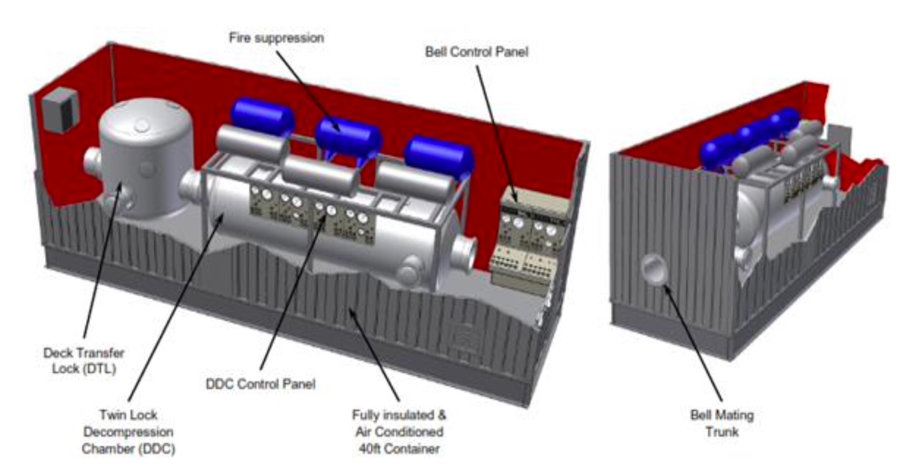

Diving operations
Highly experienced across oil and gas, renewable energies and other commercial projects worldwide. Partnerships provide access to DP2 Diving Support Vessels, so we can manage the entire diving scope for clients.
Closed Bell Transfer System
The Ezze Marine designed modular Closed Bell Transfer System is designed for non-saturation diving shallower than 60 msw. Divers are transferred from their working depth to the surface decompression chamber in the closed bell, at a pressure greater than or equal to the first decompression stop.



Planning a diving scope?
Tell us the location, water depth and schedule, and we will propose the right diving system, vessel and team.